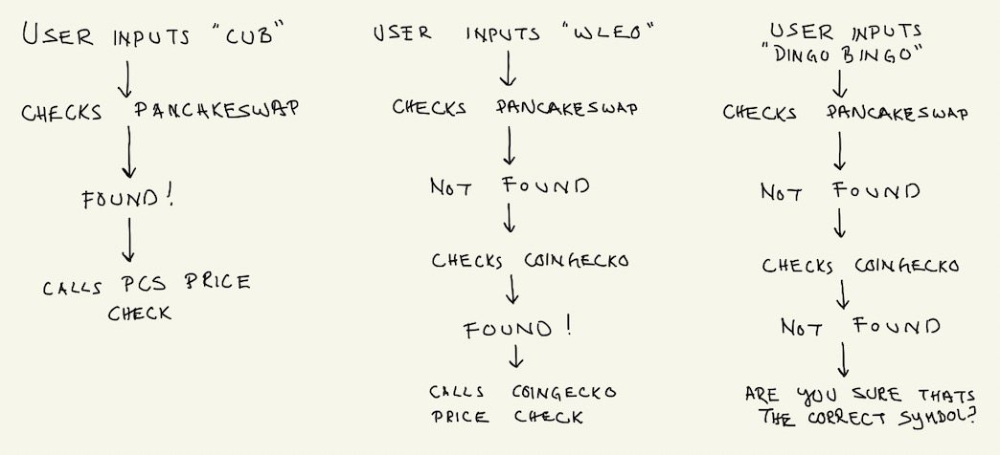

Day 5 of 100DaysOfCode - Handling Inputs
Today (and yesterday) was spent almost entirely on figuring out how to manage the input side of things, as different APIs provide different information that is organized in different ways.
This is what I ended up with:
1 | def token_symbol_request(): |
The gist of what’s going on here:

This is pretty good so far: now I can call one function, token_symbol_request(), and then that’ll route to the correct API to pull the price information from. I realized that it’s probably not worth calling the API every single time I would like to check where the coin is listed, so I plan to save a copy of the list locally. Ideally, I can call a function whenever it’s needed and save an updated copy to include any new listings.
I would like my next step to be thinking about the actual portfolio itself. Specifically: how the portfolio will be organized, stored (I’ll have to figure out how to write to a file!), and modified. Before doing that though, I have to change the functions that check prices to have them pull the user input from token_symbol_request(). Currently, the correct API is called, but then it requests the user to input the token again, which seems a little silly.
I’m pretty happy with the progress so far. This project has been a good learning experience, and I expect that to continue (and probably get more difficult) as time goes on.